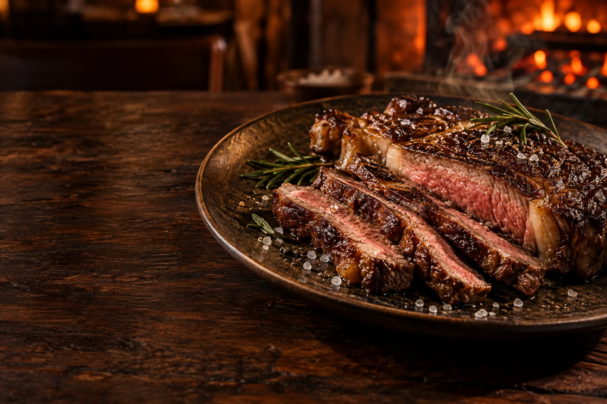
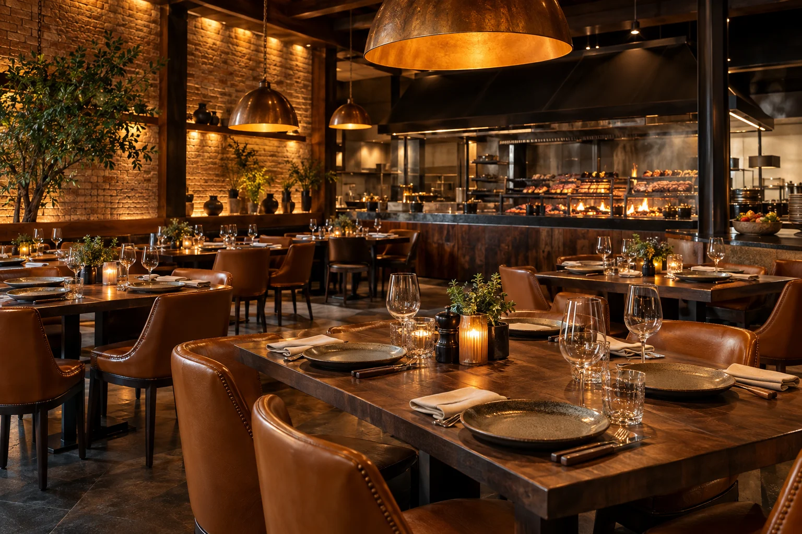

O encontro começa na brasa
Fogo aceso.
Mesa posta.
Bom encontro.
Cortes na brasa, acompanhamentos da casa e tempo para aproveitar cada conversa.
Restaurante fictício · Imagem ilustrativa gerada
O sabor do fogo
Bons acompanhamentos
Uma mesa para compartilhar

A casa
Tem lugar
para mais uma história.
Madeira, luz quente e uma cozinha que aproxima. A proposta da Brasa & Sabor é reunir gente em volta de uma boa mesa.
Cozinha à vista
O fogo como parte da experiência.
Para acompanhar
Bebidas e porções para prolongar a conversa.
Para reunir
Uma noite a dois ou uma mesa com os amigos.
Reserve um momento
Hoje merece
uma boa mesa.
Escolha o dia, o período e a quantidade de pessoas para experimentar a reserva.
Reserva simulada · Nenhum dado enviado
Horários demonstrativos
- Terça a quinta
- 18h às 23h
- Sexta e sábado
- 18h às 00h
- Domingo
- 12h às 17h
Localização fictícia
Rua fictícia, nº 00 — Bairro demonstrativo. Localização criada apenas para o modelo.
Informações para você
Antes de chegar.
Posso fazer um pedido ou uma reserva por aqui?
Nesta apresentação, os botões abrem uma simulação. Nenhum pedido, reserva ou pagamento é enviado a um restaurante.
O cardápio e os preços são reais?
Os pratos, valores e horários são fictícios e servem para apresentar a organização do site.
As imagens são da casa?
As imagens foram geradas por IA para ilustrar esta marca fictícia. No site de um cliente, podemos usar as fotos reais dos pratos e do ambiente.
O site pode receber as informações do meu negócio?
Sim. Cardápio, fotografias, horários, localização e canais de atendimento podem ser personalizados com a TS Digital.
Seu negócio, bem apresentado
O próximo site
pode ser o seu.
Apresente seu cardápio, valorize suas fotos e facilite o contato dos seus clientes com um site da TS Digital.
Solicitar orçamento